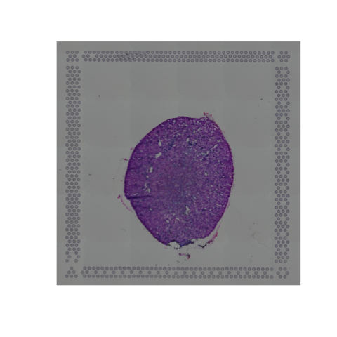
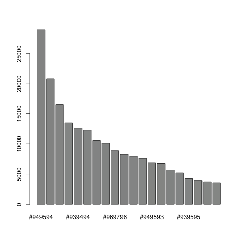
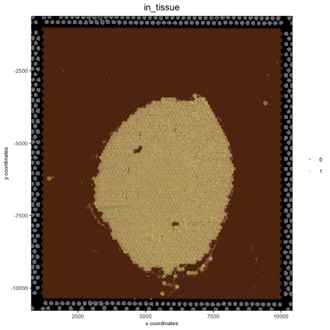
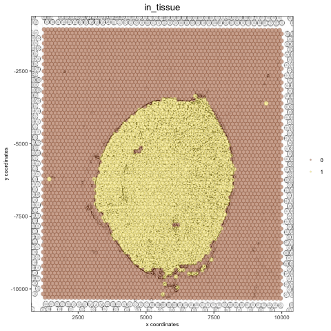
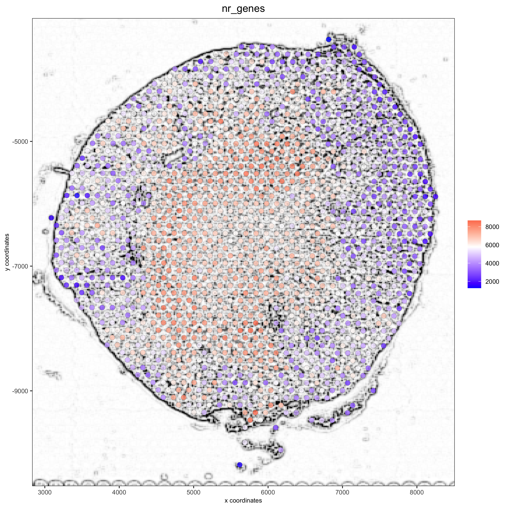
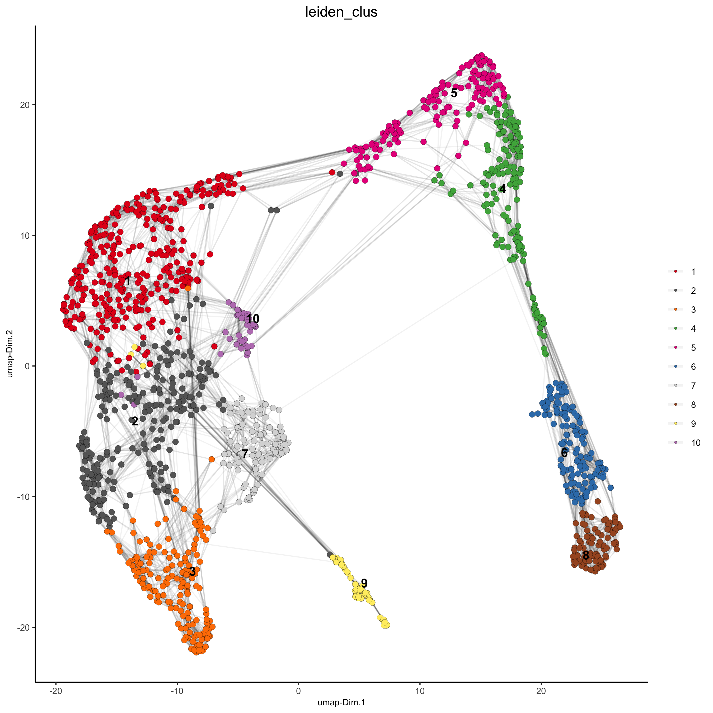
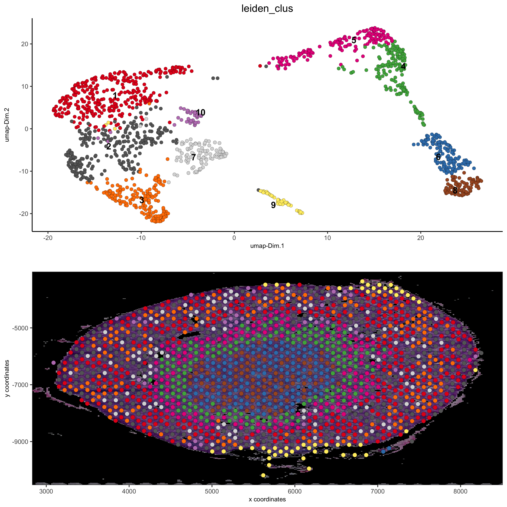
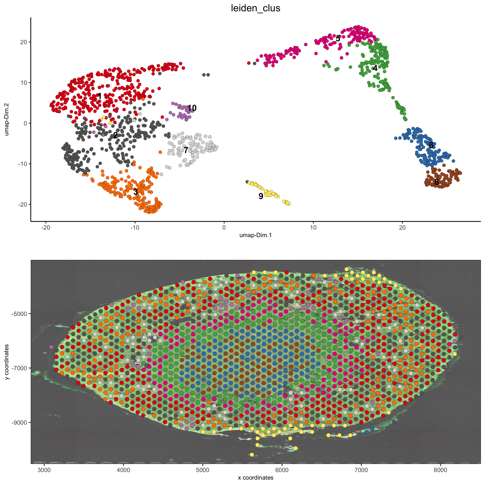
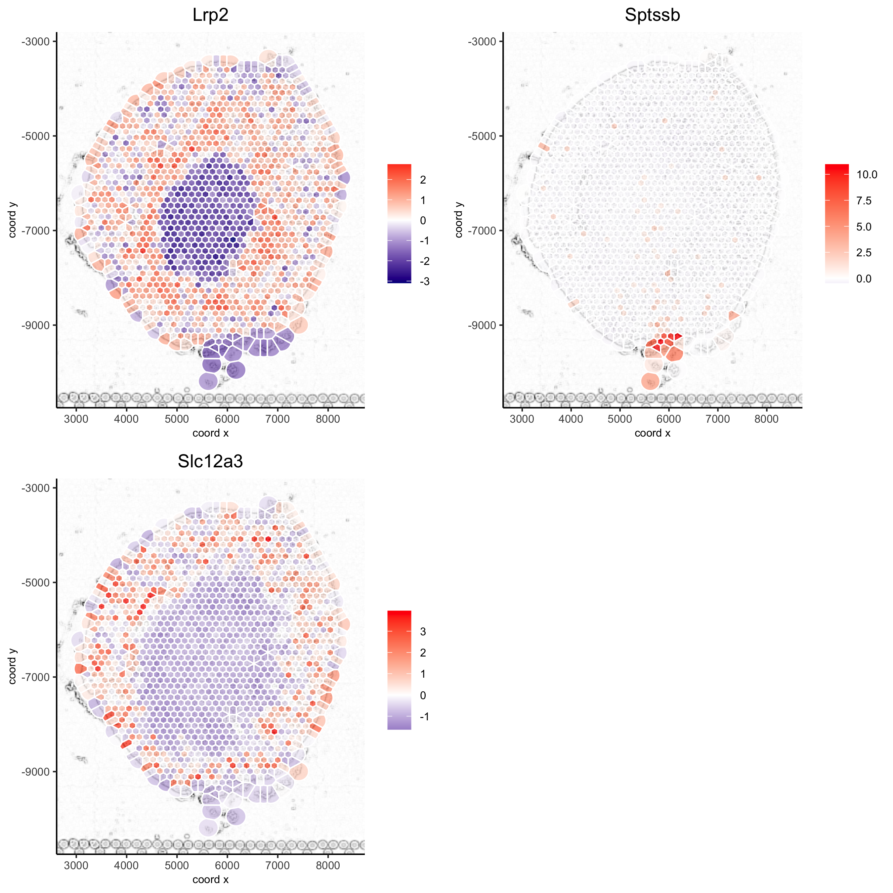

vignettes/howto_images.Rmd
howto_images.RmdHow to work with background images?
All spatial visualization functions in the Giotto toolbox can be overlaid on a background image. This allows you to visualize your results on top of the original tissue image. We provide multiple ways of adding and modifying figures in Giotto. In short there are 3 things to consider:
- how to add an image to a Giotto object?
-
createGiottoVisiumObject can be used directly for a visium 10X dataset
-
createGiottoImage can be used to create a Giotto image object from a magick image object
-
addGiottoImage this add a Giotto image to your Giotto object
- updateGiottoImage this helps to adjust the alignment of your image with your results
- how to modify an image? e.g. change background color
- estimateImageBg function to estimage the background color of your Giotto or magick image
- changeImageBg function to change the background color of your image
- plotGiottoImage function to plot an image by itself
- how to show these images with your spatial plots?
- showGiottoImageNames this tells you which giotto image(s) are part of your giotto object
- Each spatial plotting function has the following 3 parameters:
- show_image = TRUE or FALSE, to show a background image or not
- image_name = name of associated Giotto image to use for the background image (option 1)
- gimage = a giotto image object to use (option 2)
- show_image = TRUE or FALSE, to show a background image or not
- addGiottoImageToSpatPlot to test your giotto images you can use this function to them to spatPlot result
Here we process the Visium Kidney dataset to illustrate all the different and flexible ways to deal with images:
1. create Giotto Giotto object
Here we use the wrapper function createGiottoVisiumObject to create a Giotto object for a 10X Visium dataset, which includes a png image.
library(Giotto) visium_kidney = createGiottoVisiumObject(visium_dir = '/path/to/Visium_data/Kidney_data', png_name = 'tissue_lowres_image.png', gene_column_index = 2)
2. align plot
The image plot and the Giotto results are not always perfectly aligned. This step just needs to be done once.
# output from Giotto spatPlot(gobject = visium_kidney, cell_color = 'in_tissue')

# problem: image is not perfectly aligned spatPlot(gobject = visium_kidney, cell_color = 'in_tissue', show_image = T, point_alpha = 0.7)

adjust the x and y minima and maxima to align the image and the giotto output results:
# check name showGiottoImageNames(visium_kidney) visium_kidney = updateGiottoImage(visium_kidney, image_name = 'image', xmax_adj = 1300, xmin_adj = 1200, ymax_adj = 1100, ymin_adj = 1000) spatPlot(gobject = visium_kidney, cell_color = 'in_tissue', show_image = T, point_alpha = 0.7)

# plot original image plotGiottoImage(visium_kidney, 'image')

3. change background of a Giotto or magick image
extract the giotto image from your giotto object and then estimate the background of your image:
myimage = getGiottoImage(visium_kidney, image_name = 'image') # extract image to modify estimateImageBg(mg_object = myimage, top_color_range = 1:20) # estimate background (bg) color

## create and test black background orig_black_png = changeImageBg(mg_object = myimage, bg_color = '#949594', perc_range = 10, new_color = '#000000', new_name = 'black_bg') mypl = spatPlot(gobject = visium_kidney, cell_color = 'in_tissue', return_plot = T, point_alpha = 0.5) mypl_image = addGiottoImageToSpatPlot(mypl, orig_black_png) mypl_image

## create and test white background orig_white_png = changeImageBg(mg_object = myimage, bg_color = '#949594', perc_range = 10, new_color = '#FFFFFF', new_name = 'white_bg') mypl = spatPlot(gobject = visium_kidney, cell_color = 'in_tissue', return_plot = T, point_alpha = 0.5) mypl_image = addGiottoImageToSpatPlot(mypl, orig_white_png) mypl_image

4. Add image form scratch
## use magick library to load (and optionally modify) figure ## # original image png_path = '/Volumes/Ruben_Seagate/Dropbox/Projects/GC_lab/Ruben_Dries/190225_spatial_package/Data/Visium_data/Kidney_data/spatial/tissue_lowres_image.png' mg_img = magick::image_read(png_path)
create a negated image
# original image negated mg_img2 = magick::image_negate(mg_img) orig_neg_png = createGiottoImage(gobject = visium_kidney, mg_object = mg_img2, name = 'image_neg', xmax_adj = 1300, xmin_adj = 1200, ymax_adj = 1100, ymin_adj = 1000) mypl_image = addGiottoImageToSpatPlot(mypl, orig_neg_png) mypl_image

create a charcoal image
# charcoal image (black/white) mg_img3 = magick::image_charcoal(mg_img, radius = 1) mg_img3 = magick::image_convert(mg_img3, colorspace = 'rgb') orig_charc_png = createGiottoImage(gobject = visium_kidney, mg_object = mg_img3, name = 'image_charc', xmax_adj = 1300, xmin_adj = 1200, ymax_adj = 1100, ymin_adj = 1000) mypl_image = addGiottoImageToSpatPlot(mypl, orig_charc_png) mypl_image

add multiple new images to your giotto object
## add images to Giotto object ## image_list = list(orig_white_png, orig_black_png, orig_neg_png, orig_charc_png) visium_kidney = addGiottoImage(gobject = visium_kidney, images = image_list) showGiottoImageNames(visium_kidney) # shows which Giotto images are attached to you Giotto object
5. Example Kidney analysis
5.1 processing
## subset on spots that were covered by tissue metadata = pDataDT(visium_kidney) in_tissue_barcodes = metadata[in_tissue == 1]$cell_ID visium_kidney = subsetGiotto(visium_kidney, cell_ids = in_tissue_barcodes) ## filter visium_kidney <- filterGiotto(gobject = visium_kidney, expression_threshold = 1, gene_det_in_min_cells = 50, min_det_genes_per_cell = 1000, expression_values = c('raw'), verbose = T) ## normalize visium_kidney <- normalizeGiotto(gobject = visium_kidney, scalefactor = 6000, verbose = T) ## add gene & cell statistics visium_kidney <- addStatistics(gobject = visium_kidney) ## visualize spatPlot(gobject = visium_kidney)

spatPlot(gobject = visium_kidney, cell_color = 'nr_genes', color_as_factor = F)

# add black background image spatPlot(gobject = visium_kidney, show_image = T, image_name = "black_bg", cell_color = 'nr_genes', color_as_factor = F, point_alpha = 0.5)

## alternative: directly provide a gimage (giotto image object), this will override the the image_name param spatPlot(gobject = visium_kidney, show_image = T, gimage = orig_charc_png, cell_color = 'nr_genes', color_as_factor = F, point_alpha = 0.8)

5.2 dimension reduction
## highly variable genes (HVG) visium_kidney <- calculateHVG(gobject = visium_kidney, nr_expression_groups = 10) ## select genes based on HVG and gene statistics, both found in gene metadata gene_metadata = fDataDT(visium_kidney) featgenes = gene_metadata[hvg == 'yes' & perc_cells > 4 & mean_expr_det > 0.5]$gene_ID ## run PCA on expression values (default) visium_kidney <- runPCA(gobject = visium_kidney, genes_to_use = featgenes) ## run UMAP and tSNE on PCA space (default) visium_kidney <- runUMAP(visium_kidney, dimensions_to_use = 1:10) plotUMAP(gobject = visium_kidney)

5.3 cluster
## sNN network (default) visium_kidney <- createNearestNetwork(gobject = visium_kidney, dimensions_to_use = 1:10, k = 15) ## Leiden clustering visium_kidney <- doLeidenCluster(gobject = visium_kidney, resolution = 0.4, n_iterations = 1000) plotUMAP(gobject = visium_kidney, cell_color = 'leiden_clus', show_NN_network = T, point_size = 2.5)

5.4 co-visualize
# expression and spatial showGiottoImageNames(visium_kidney) spatDimPlot(gobject = visium_kidney, cell_color = 'leiden_clus', show_image = T, image_name = 'black_bg', dim_point_size = 2, spat_point_size = 2.5, save_param = list(save_name = '7_a_covis_leiden_black'))

spatDimPlot(gobject = visium_kidney, cell_color = 'leiden_clus', show_image = T, image_name = 'image_neg', dim_point_size = 2, spat_point_size = 2.5, save_param = list(save_name = '7_b_covis_leiden_negated'))

spatDimPlot(gobject = visium_kidney, cell_color = 'leiden_clus', show_image = T, image_name = 'image_charc', dim_point_size = 2, spat_point_size = 2.5, save_param = list(save_name = '7_b_covis_leiden_charc'))

5.5 spatial gene plots
## gene plots ## spatGenePlot(visium_kidney, show_image = T, image_name = 'image_charc', expression_values = 'scaled', point_size = 2, genes = c('Lrp2', 'Sptssb', 'Slc12a3'), cow_n_col = 2, cell_color_gradient = c('darkblue', 'white', 'red'), gradient_midpoint = 0, point_alpha = 0.8, save_param = list(save_name = '8_a_spatgene_charc'))

spatGenePlot(visium_kidney, show_image = T, image_name = 'image_charc', expression_values = 'scaled', point_size = 2, point_shape = 'voronoi', genes = c('Lrp2', 'Sptssb', 'Slc12a3'), cow_n_col = 2, cell_color_gradient = c('darkblue', 'white', 'red'), gradient_midpoint = 0, vor_alpha = 0.8, save_param = list(save_name = '8_b_spatgene_charc_vor'))

5.6 subset plots
visium_kidney_subset = subsetGiottoLocs(visium_kidney, x_min = 3000, x_max = 5500, y_min = -10000, y_max = -7000) spatGenePlot(visium_kidney_subset, show_image = T, image_name = 'image_charc', expression_values = 'scaled', point_size = 4, genes = c('Lrp2', 'Sptssb', 'Slc12a3'), cow_n_col = 2, cell_color_gradient = c('darkblue', 'white', 'red'), gradient_midpoint = 0, point_alpha = 0.8, save_param = list(save_name = '9_a_subset_spatgene_charc'))

spatGenePlot(visium_kidney_subset, show_image = T, image_name = 'image_charc', expression_values = 'scaled', point_size = 4, point_shape = 'voronoi', vor_alpha = 0.5, genes = c('Lrp2', 'Sptssb', 'Slc12a3'), cow_n_col = 2, cell_color_gradient = c('darkblue', 'white', 'red'), gradient_midpoint = 0, save_param = list(save_name = '9_b_subset_spatgene_charc_vor'))